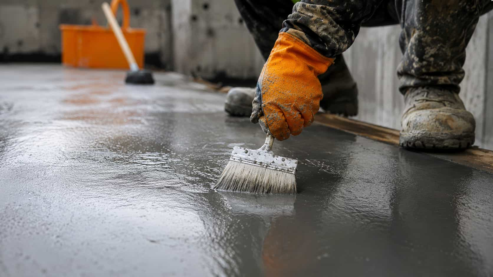

Clear Project Details
Organize surface type, size, access notes, timing, and finish preferences before comparing options.
SlabWay helps homeowners submit project details, review concrete service categories, and connect with participating independent local providers. We do not perform concrete work directly.
Organize surface type, size, access notes, timing, and finish preferences before comparing options.
Review independent provider responses with attention to scope, preparation, timelines, and terms.
SlabWay keeps the request path clear, comparison-focused, and centered on homeowner choice.


Concrete projects can depend on size, surface condition, access, finish goals, drainage, preparation, and local provider availability. SlabWay is built to help homeowners share the right details before deciding how to continue.
SlabWay is an independent provider-matching platform. We do not install, repair, inspect, or guarantee concrete work. Participating providers are independent and provide their own pricing, availability, warranties, and service terms.
SlabWay keeps the process focused on homeowner choice. Submitting a request does not create a service agreement, and final terms come from participating providers.
Start with category, approximate size, surface condition, access notes, finish goals, and timing preferences.
Participating providers may offer different scopes, timelines, pricing structures, preparation notes, and service terms.
Review details such as removal, surface prep, finish type, scheduling, warranty terms, and provider-specific conditions.
You decide whether to contact, compare further, pause, or continue with an independent provider.
Compare provider options for driveway replacement, new driveway pours, surface prep, access notes, and finish preferences.
Explore optionReview patio project options for backyard layouts, slab shape, surface texture, drainage notes, and outdoor-use details.
Explore optionCompare decorative concrete options involving patterns, color notes, border ideas, texture goals.
Explore optionOrganize repair requests for cracks, uneven surfaces, worn edges, damaged sections, and provider inspection preferences.
Explore optionSlabWay helps homeowners organize surface type, approximate size, access notes, finish goals, and timing preferences before comparing options.
The platform supports comparison between participating providers without presenting itself as a concrete contractor or installation company.
You decide whether to continue, ask questions, pause the request, or contact an independent provider directly.

SlabWay helps homeowners organize project details before speaking with independent concrete providers. The platform is built for comparison, not direct installation.
Request details help providers understand size, surface type, access, finish, and timing.
Homeowners may review different provider approaches, project notes, and service terms.
You choose whether to continue, ask more questions, pause, or contact a provider directly.